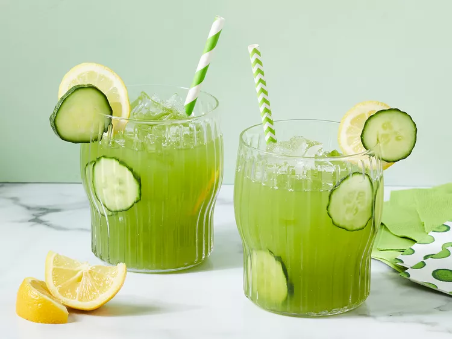

Refreshing Cucumber Lemonade

Description
Lemonade and cucumber juice pair perfectly in this refreshing homemade summer drink. Serve in the pitcher with cucumber and lemon slices.
Ingredients
- 1 cup water
- ½ cup white sugar
- 1 cucumber, sliced
- 6 lemons, juiced
Steps
- Gather all ingredients.
- Make the simple syrup: Combine water and sugar together in a saucepan over medium heat; heat until just about to boil and sugar has dissolved. Place in refrigerator until cool, about 30 minutes.
- Blend cucumber in a blender or food processor until mashed into a pulp. Pour cucumber pulp into a fine mesh strainer placed over a bowl; allow to sit until you have about 2/3 cup of cucumber juice in the bowl, about 15 minutes.
- Stir simple syrup, cucumber juice, and lemon juice together in a pitcher. Serve cold.